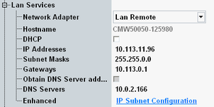

Manual TCP/IP Configuration
To disable dynamic TCP/IP configuration and enter the TCP/IP address information manually, proceed as follows:
Obtain the IP address and subnet mask for the R&S CMW and the IP address for the local default gateway from your network administrator. If needed, also obtain the name of your DNS domain and the IP addresses of the DNS and WINS servers on your network.
Perform the startup procedure.
Press the SETUP key to open the "Setup" dialog.
In the "Lan Services" section, select the network adapter "Lan Remote".
Disable DHCP.
Enter your address information, for example:
